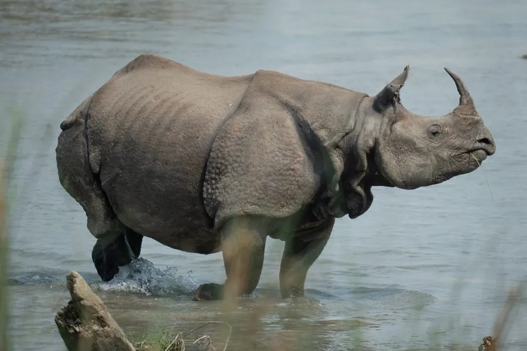

哺乳动物 · 动物界
印度犀 Rhinoceros unicornis

南亚草原上的独角犀，皮肤厚如铠甲并布满颗粒状突起，善游泳，经过严格保护后数量从不足百只回升。
- 分类
- 门脊索动物门纲哺乳纲目奇蹄目科犀科属犀属
- 栖息环境
- 河流冲积平原的高草丛、沼泽与林缘湿地，善游泳
- 地理分布
- 印度东北部阿萨姆邦和尼泊尔南部的保护区
- 保护级别
- IUCN 易危（VU）
物种志
印度犀体长 3–3.8 米，肩高 1.6–1.9 米，体重 1600–3200 kg。它全身披着灰褐色厚皮，肩、胁、腿部的皮肤形成巨大褶皱，像披着一层铠甲，皮上密布颗粒状小突起；鼻端长有一只角，最长可超过 30 cm，雌雄都有。
印度犀分布于印度东北部和尼泊尔的草原、湿地与河流冲积平原，栖息于高草丛、沼泽和林缘，善游泳，常在水塘中避暑。它是典型的独居动物，成年雄犀有领地，仅在发情和育幼时短暂相聚。印度犀以草、芦苇和水生植物为食，多在晨昏取食；雌兽妊娠期约 15–16 个月，每胎 1 仔。20 世纪初，印度犀曾因狩猎锐减至不足 100 只，经过印度和尼泊尔数十年的严格保护，种群已恢复到约 4000 头。
形态与习性
- 食性草、芦苇与水生植物
- 体长3–3.8 m，肩高 1.6–1.9 m
- 体重1600–3200 kg
- 寿命野外约 40–50 年
- 繁殖妊娠期约 15–16 个月，每胎 1 仔
- 角鼻端单角，最长可超过 30 cm
- 皮肤厚皮形成巨大褶皱，密布颗粒状突起
趣味知识
- 印度犀的皮肤褶皱像铠甲，皮上还布满颗粒状小突起。
- 它善游泳，常泡在水塘中避暑和驱赶蚊虫。
- 20 世纪初印度犀仅剩不足 100 只，保护后恢复到约 4000 头。
- 印度犀的角由角蛋白构成，成分与指甲相似。